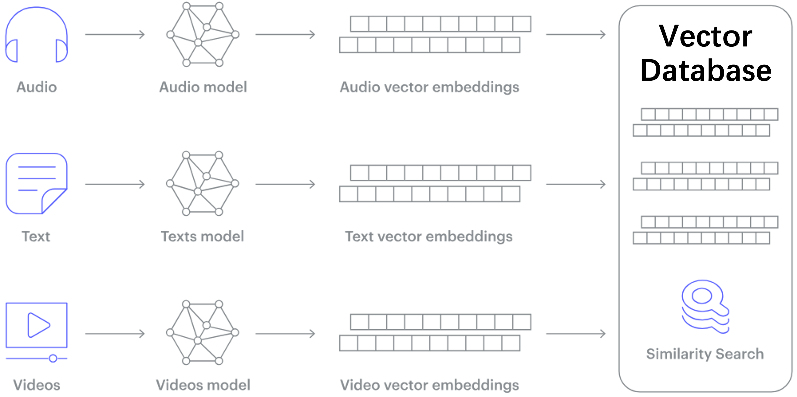
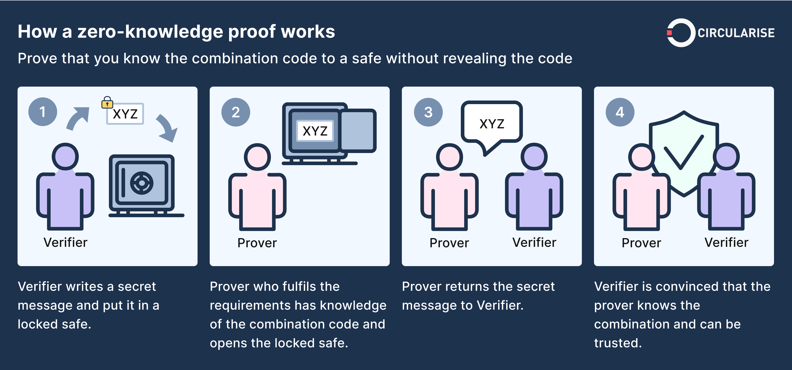
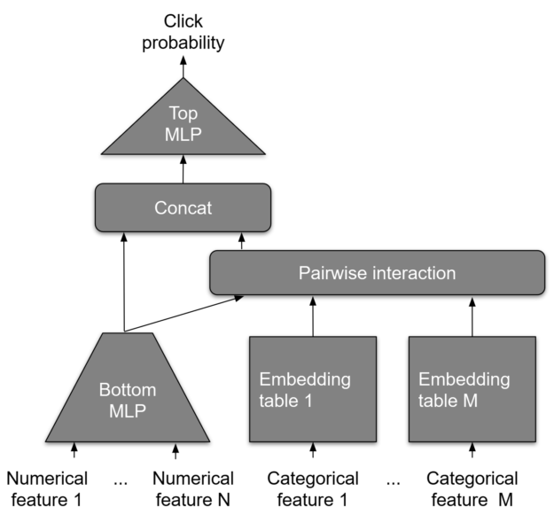
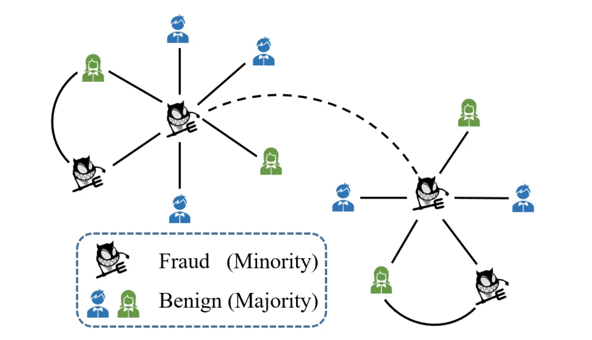
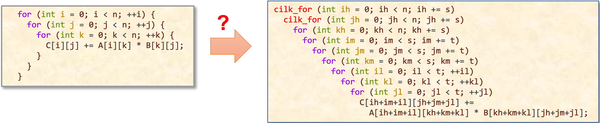

Student Research Opportunities
Contact: Xuhao Chen
We are looking for grad & undergrad students to join our lab. Feel free to reach out if you are interested in machine learning systems, computer architecture, and/or high performance computing. Our projects have the potential to become MEng thesis work. We have 6-A program opportunities available. If you are interested, please send your CV to cxh@mit.edu and fill in the recruiting form.
Research Summary: The AI revolution is transforming various industries and having a significant impact on society. However, AI is computationally expensive and hard to scale, which poses a great challenge in computer system design. Our lab is broadly interested in computer system architectures and high performance computing, particularly for scaling AI and ML computation.
Top-tier system & HPC conferences [OSDI, SOSP], [ASPLOS], [ISCA], [VLDB], [SIGMOD] [SC], [PPoPP].
Interesting MLSys topics: Transformer (Attention), Mixture-of-Experts, Vector Similarity Search, Deep Recommendation Models, Graph Machine Learning, Graph Sampling, Graph Algorithms, Robotics, Large Language Models, GPU Acceleration, Model Serving, Graph Databases, Graph Transformer, Diffusion, Generative AI, Reinforcement Learning.
Below are some ongoing research projects.
Scalable Vector Database [Elx Link]
Recent advances in deep learning models map almost all types of data (e.g., images, videos, documents) into high-dimension vectors. Queries on high-dimensional vectors enable complex semantic-analysis that was previously difficult if not impossible, thus they become the cornerstone for many important online services like search, eCommerce, and recommendation systems.

In this project we aim to build a massive-scale Vector Database on the multi-CPU and multi-GPU platform. In a Vector Database, the major operation is to search the k closest vectors to a given query vector, known as k-Nearest-Neighbor (kNN) search. Due to massive data scale, Approximate Nearest-Neighbor (ANN) search is used in practice instead. One of the most promising ANN approaches is the graph-based approach, which first constructs a proximity graph on the dataset, connecting pairs of vectors that are close to each other, then performs a graph traversal on the proximity graph for each query to find the closest vectors to a query vector. In this project we will build a vector database using graph-based ANN search algorithm that supports billion-scale datasets.
Qualifications:
- Strong programming skills in C/C++/Python language
- Experience with design and analysis of algorithms, e.g., MIT 6.1220 (previously 6.046)
- Experience with performance engineering is a plus, e.g., MIT 6.1060 (previously 6.172)
- GPU/CUDA programming is a plus
References
- Manohar, M., et.al., ParlayANN: Scalable and Deterministic Parallel Graph Based Approximate Nearest Neighbor Search Algorithms. PPoPP 2024. https://arxiv.org/pdf/2305.04359.pdf
- Ootomo, H., et.al., CAGRA: Highly Parallel Graph Construction and Approximate Nearest Neighbor Search for GPUs. https://arxiv.org/pdf/2308.15136.pdf
- Peng, Z., et. al., iQAN: Fast and Accurate Vector Search with Efficient Intra-Query Parallelism on Multi-Core Architectures. PPoPP 2023. https://dl.acm.org/doi/pdf/10.1145/3572848.3577527
- Johnson, J., Douze, M., Jegou, H. (2017). Billion-scale similarity search with GPUs. IEEE Transactions on Big Data. https://arxiv.org/pdf/1702.08734.pdf
- Malkov, Y., Yashunin, D. Efficient and robust approximate nearest neighbor search using Hierarchical Navigable Small World graphs. TPAMI 2018. https://arxiv.org/ftp/arxiv/papers/1603/1603.09320.pdf
Zero-Knowledge Proof [Elx Link]
Zero-knowledge proof (ZKP) is a cryptographic method of proving the validity of a statement without revealing anything other than the validity of the statement itself. This “zero-knowledge” property is attractive for many privacy-preserving applications, such as blockchain and cryptocurrency systems. Despite its great potential, ZKP is notoriously compute intensive, which hampers its real-world adoption. Recent advances in cryptography, known as zk-SNARK, have brought ZKP closer to practical use. Although zk-SNARK enables fast verification of the proof, proof generation in ZKP is still quite expensive and slow.

In this project, we will explore ZKP acceleration by using algorithm innovations, software performance engineering, and parallel hardware like GPU, FPGA or even ASIC. We aim to investigate and implement efficient algorithms for accelerating elliptic curve computation. We will also explore acceleration opportunities for the major operations, e.g., finite field arithmetic, Multi-scalar Multiplication (MSM) and Number-theoretic transformations (NTT).
Qualifications:
- Strong programming skills in C/C++ language
- Experience with design and analysis of algorithms, e.g., MIT 6.1220 (previously 6.046)
- Experience with performance engineering is a plus, e.g., MIT 6.1060 (previously 6.172)
- GPU/CUDA and/or Rust/Web Assembly/Javascript programming is a plus
References
- Zhuoran Ji, et. al., Accelerating Multi-Scalar Multiplication for Efficient Zero Knowledge Proofs with Multi-GPU Systems, ASPLOS 2024. https://dl.acm.org/doi/10.1145/3620666.3651364
- Weiliang Ma, et. al., GZKP: A GPU Accelerated Zero-Knowledge Proof System. ASPLOS 2023. https://doi.org/10.1145/3575693.3575711
Deep Recommendation System [Elx Link]
Deep Learning Recommendation Models (DLRMs) are widely used across industry to provide personalized recommendations to users and consumers. Specifically, they are the backbone behind user engagement for industries such as ecommerce, entertainment, and social networks. DLRMs have two stages: (1) training, in which the model learns to minimize the difference between predicted and actual user interactions, and (2) inference, in which the model provides recommendations based on new data. Traditionally, GPUs have been the hardware component of choice for DLRM training because of the high computational demand. In contrast, CPUs have been widely used for DLRM inference due to tight latency requirements that restrict the batch size. An existing bottleneck in inference is the high computational and memory bandwidth, which contribute greatly to loads on data centers and computing clusters.

In this project, we will focus on exploring GPU optimizations to the embedding stage of the DLRM inference pipeline, which has traditionally only utilized CPUs. Initially, we would like to explore CPU-GPU coupled schemes, for instance using GPUs as extra cache space (e.g. to store more embeddings or to memoize sparse feature computations), and multi-GPU cluster computation in order to further accelerate inference for more complex models. The goal is to coalesce existing inference frameworks, profile them, and implement novel ones to exhibit substantial speedup for DLRM inference on GPUs.
Qualifications:
- Strong programming skills in C/C++/Python language
- Experience with design and analysis of algorithms, e.g., MIT 6.1220 (previously 6.046)
- Experience with performance engineering is a plus, e.g., MIT 6.1060 (previously 6.172)
- GPU/CUDA programming is a plus
References
- R. Jain, et. al., Optimizing CPU Performance for Recommendation Systems At-Scale. ISCA ’23. https://doi.org/10.1145/3579371.3589112
- H. Ye et. al., GRACE: A Scalable Graph-Based Approach to Accelerating recommendation model inference. ASPLOS 2023. https://doi.org/10.5281/zenodo.7699872
- D. H. Kurniawan,et. al., EVStore: Storage and Caching Capabilities for Scaling Embedding Tables in Deep Recommendation Systems. ASPLOS ‘23. https://doi.org/10.1145/3575693.3575718
Graph AI Systems [Elx Link]
Deep Learning is good at capturing hidden patterns of Euclidean data (images, text, videos). But what about applications where data is generated from non-Euclidean domains, represented as graphs with complex relationships and interdependencies between objects? That’s where Graph AI or Graph ML come in. Handling the complexity of graph data and graph algorithms requires innovations in every layer of the computer system, including both software and hardware.

In this project we will design and build efficient graph AI systems to support scalable graph AI computing. In particular, we will build software frameworks for Graph AI and ML, e.g., graph neural networks (GNN), graph pattern mining (GPM) and graph sampling, and hardware accelerators that further enhance system efficiency and scalability.
Qualifications:
- Strong programming skills in C/C++/Python language
- Experience with design and analysis of algorithms, e.g., MIT 6.1220 (previously 6.046)
- Basic understanding of computer architecture, e.g., MIT 6.1910 (previously 6.004)
- Experience with performance engineering is a plus, e.g., MIT 6.1060 (previously 6.172)
- GPU/CUDA programming is a plus
- Familiarity with deep learning frameworks is a plus, e.g., PyTorch
References
- gSampler, SOSP 2023 [PDF] [Code]
- NextDoor, EuroSys 2021 [PDF][Code]
- Scalable graph sampling on gpus with compressed graph, CIKM 2022, https://dl.acm.org/doi/pdf/10.1145/3511808.3557443
Graph AI for Financial Security [Elx Link]
The advent of cryptocurrency introduced by Bitcoin ignited an explosion of technological and entrepreneurial interest in payment processing. Dampening this excitement was Bitcoin’s bad reputation. Many criminals used Bitcoin’s pseudonymity to hide in plain sight, conducting ransomware attacks and operating dark marketplaces for the exchange of illegal goods and services.

This project offers a golden opportunity to apply machine learning for financial forensics. The data of Bitcoin transactions naturally forms a financial transaction graph, in which we can apply graph machine learning and graph pattern mining techniques to automatically detect illegal activities. We will explore the identification and clustering of frequent subgraphs to uncover money laundering patterns, and conduct link predictions on the wallets (nodes) to unveil the malicious actor behind the scene.
Qualifications:
- Strong programming skills in Python and C/C++ language
- Background and prior experience with design and analysis of algorithms (e.g., 6.046)
- Some familiarity with deep learning frameworks such as PyTorch
References
- GraphPrompt, https://arxiv.org/pdf/2302.08043.pdf
- Glass, https://openreview.net/pdf?id=XLxhEjKNbXj
AI/ML for Performance Engineering [Elx Link]
Generative AI, such as Large Language Models (LLMs), has been successfully used to generate computer programs, a.k.a code generation. However, its model performance degrades substantially when asked to do code optimization a.k.a. software performance engineering (SPE), i.e., generate not just correct but fast code.

This project aims to leverage the capabilities of LLMs to revolutionize the area of automatic code optimization. We focus on transforming existing sequential code into high-performance, parallelized code, optimized for specific parallel hardware.
Qualifications:
- Strong programming skills in Python and C/C++ language
- Background and prior experience with design and analysis of algorithms (e.g., 6.046)
- Familiarity with LLMs such as ChatGPT and Code Llama
References
- Performance-Aligned LLMs for Generating Fast Code, https://arxiv.org/pdf/2404.18864
- Learning Performance Improving Code Edits, https://pie4perf.com/
- Can Large Language Models Write Parallel Code? https://arxiv.org/pdf/2401.12554.pdf
- MPIrigen: MPI Code Generation through Domain-Specific Language Models, https://arxiv.org/pdf/2402.09126.pdf
- The Landscape and Challenges of HPC Research and LLMs, https://arxiv.org/pdf/2402.02018.pdf
Efficient Robotics Computing [Elx Link]
The advancement of robotics technology is rapidly changing the world we live in. With predictions of 20 million robots by 2030 and a market capitalization of US$210 billion by 2025, it is clear that robotics will play an increasingly important role in society. To become widespread, robots need to meet the demands of real-world environments, which necessitates them being autonomous and capable of performing complex artificial intelligence (AI) tasks in real-time.
In this project we aim to build software and hardware systems for Robotics.
Qualifications:
- Strong programming skills in C/C++/Python language
- Experience with design and analysis of algorithms, e.g., MIT 6.1220 (previously 6.046)
- Experience with performance engineering is a plus, e.g., MIT 6.1060 (previously 6.172)
- Parallel OpenMP or GPU/CUDA programming is a plus
References
- Phillip B Gibbons (CMU)'s lab. Tartan: Microarchitecting a Robotic Processor. ISCA 2024 https://github.com/cmu-roboarch/tartan
- Tor Aamodt (UBC)'s Lab. Collision Prediction for Robotics Accelerators. ISCA 2024 https://people.ece.ubc.ca/~aamodt/publications/papers/shah.isca2024.pdf
- Tor Aamodt (UBC)'s Lab. Energy-Efficient Realtime Motion Planning. ISCA 2023. https://people.ece.ubc.ca/~aamodt/publications/papers/shah.isca2023.pdf
- Phillip B Gibbons (CMU)'s lab. Agents of Autonomy: A Systematic Study of Robotics on Modern Hardware. SIGMETRICS 2023. https://www.pdl.cmu.edu/PDL-FTP/associated/bakshalipour-Agents-of-Autonomy.pdf
- Sabrina M. Neuman, Vijay Janapa Reddi (Harvard)'s Lab. RoboShape: Using Topology Patterns to Scalably and Flexibly Deploy Accelerators Across Robots. ISCA 2023. https://dl.acm.org/doi/pdf/10.1145/3579371.3589104
- Lydia Kavraki (Rice)'s Lab. https://www.kavrakilab.org/publications.html Sophia Shao (Berkeley)'s lab. RoSÉ: A Hardware-Software Co-Simulation Infrastructure Enabling Pre-Silicon Full-Stack Robotics SoC Evaluation. https://dl.acm.org/doi/abs/10.1145/3579371.3589099
- A Survey of FPGA-Based Robotic Computing. https://ieeexplore.ieee.org/abstract/document/9439435
- Phillip B Gibbons (CMU)'s lab. RACOD: algorithm/hardware co-design for mobile robot path planning. ISCA 2022. https://dl.acm.org/doi/abs/10.1145/3470496.3527383